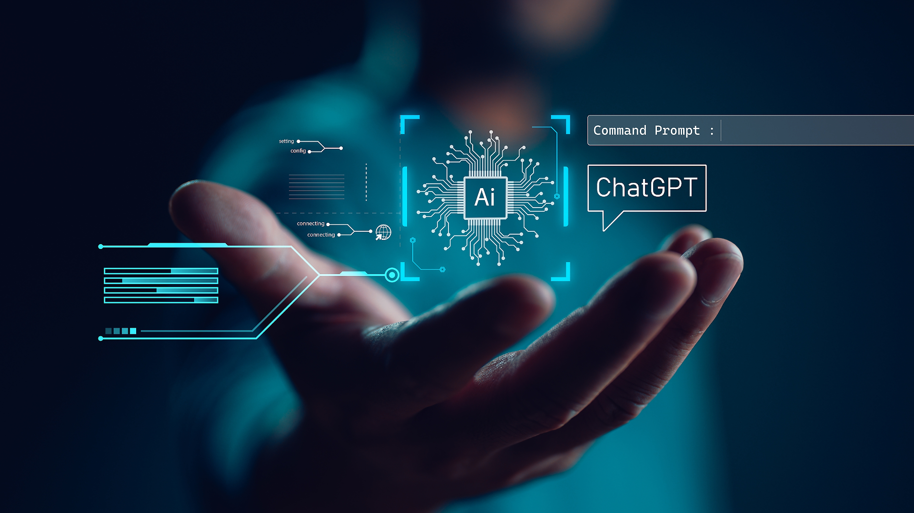

Lo Ultimo en Tecnologia
La tecnología en la actualidad: impacto y desafíos
En el siglo XXI, la tecnología se ha convertido en una parte fundamental de la vida cotidiana. Desde la comunicación hasta la medicina, la educación y la industria, los avances tecnológicos han transformado la sociedad de maneras inimaginables hace solo unas décadas. Sin embargo, esta revolución tecnológica también plantea numerosos desafíos que requieren un análisis profundo y soluciones innovadoras.
Uno de los ámbitos donde la tecnología ha tenido mayor impacto es en la comunicación. La llegada de internet y los dispositivos móviles ha cambiado la manera en que las personas interactúan entre sí. Hoy en día, es posible conectarse con alguien al otro lado del mundo en cuestión de segundos. Las redes sociales, las videollamadas y las plataformas de mensajería instantánea han facilitado la comunicación, aunque también han traído consigo problemas como la desinformación y la adicción a las pantallas.
En el sector de la salud, los avances tecnológicos han permitido mejoras significativas en la detección y el tratamiento de enfermedades. La inteligencia artificial (IA) y el aprendizaje automático se utilizan para analizar grandes volúmenes de datos y ayudar a los profesionales médicos a tomar decisiones más precisas. Además, el desarrollo de la telemedicina ha facilitado el acceso a la atención sanitaria para personas en zonas remotas o con dificultades de movilidad.
La educación también ha experimentado una transformación radical gracias a la tecnología. Las plataformas de aprendizaje en línea han democratizado el acceso al conocimiento, permitiendo que millones de personas puedan aprender desde cualquier lugar del mundo. Sin embargo, la brecha digital sigue siendo un obstáculo, ya que no todas las personas tienen acceso a dispositivos o conexión a internet de calidad.
En el ámbito laboral, la automatización y la robótica han modificado la forma en que se realizan muchas tareas. Si bien estos avances han incrementado la eficiencia y reducido costos, también han generado preocupaciones sobre la pérdida de empleos. Es fundamental que los gobiernos y las empresas implementen estrategias de capacitación para que los trabajadores puedan adaptarse a estas nuevas tecnologías y evitar un aumento del desempleo.
A pesar de los beneficios que la tecnología ofrece, también existen riesgos asociados a su uso. La ciberseguridad es uno de los mayores desafíos, ya que el robo de datos y los ataques informáticos pueden comprometer información personal y empresarial. Asimismo, el desarrollo de la inteligencia artificial plantea cuestiones éticas sobre su regulación y el control de su uso.
En conclusión, la tecnología en la actualidad es una herramienta poderosa que ha cambiado todos los aspectos de la sociedad. Sin embargo, es esencial abordar los desafíos que surgen con su desarrollo para garantizar que su impacto sea positivo y equitativo. La clave está en encontrar un equilibrio entre la innovación y la responsabilidad, asegurando que los avances tecnológicos beneficien a toda la humanidad sin dejar a nadie atrás.
Inicio
